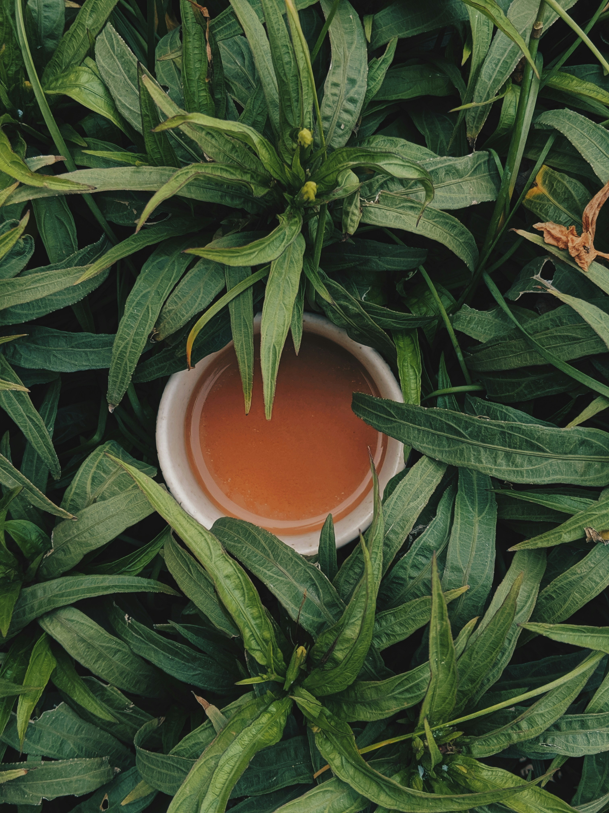
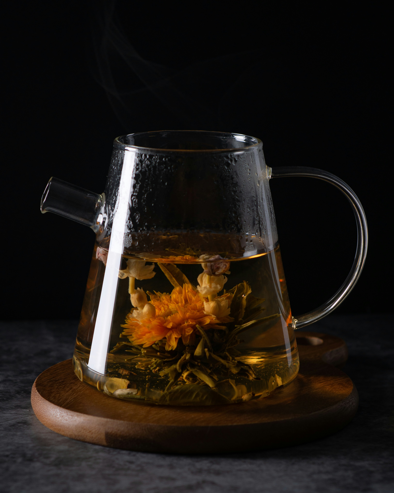
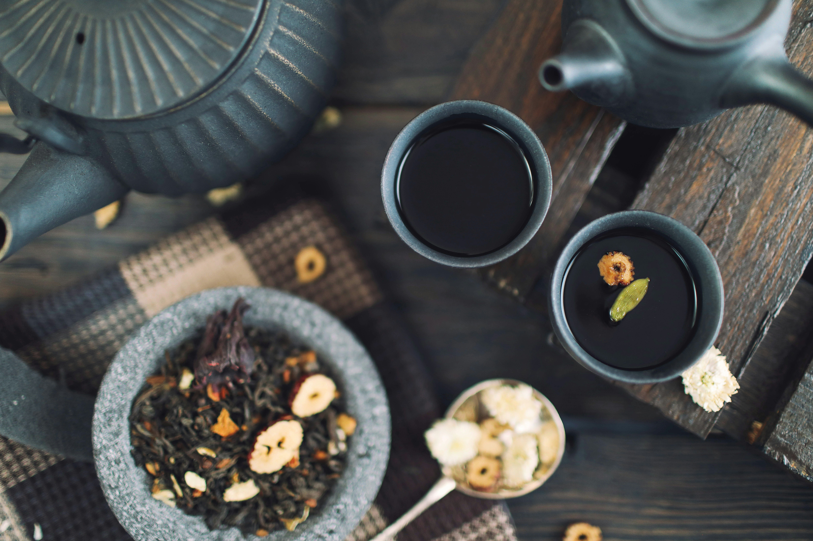

BiDemli Çaylarının Faydaları

Yeşil Çay: Enerji ve Antioksidan
Metabolizma hızlandırıcı ve güçlü antioksidan içeriğiyle bağışıklığınızı destekler.

Yeşil Çay: Enerji ve Antioksidan
Metabolizma hızlandırıcı ve güçlü antioksidan içeriğiyle bağışıklığınızı destekler.

Papatya Çayı: Rahatlatıcı ve Huzurlu
Günün yorgunluğunu atmak ve daha kaliteli bir uyku için ideal bir seçenektir.

Papatya Çayı: Rahatlatıcı ve Huzurlu
Günün yorgunluğunu atmak ve daha kaliteli bir uyku için ideal bir seçenektir.